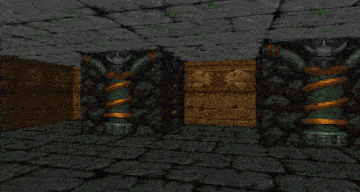
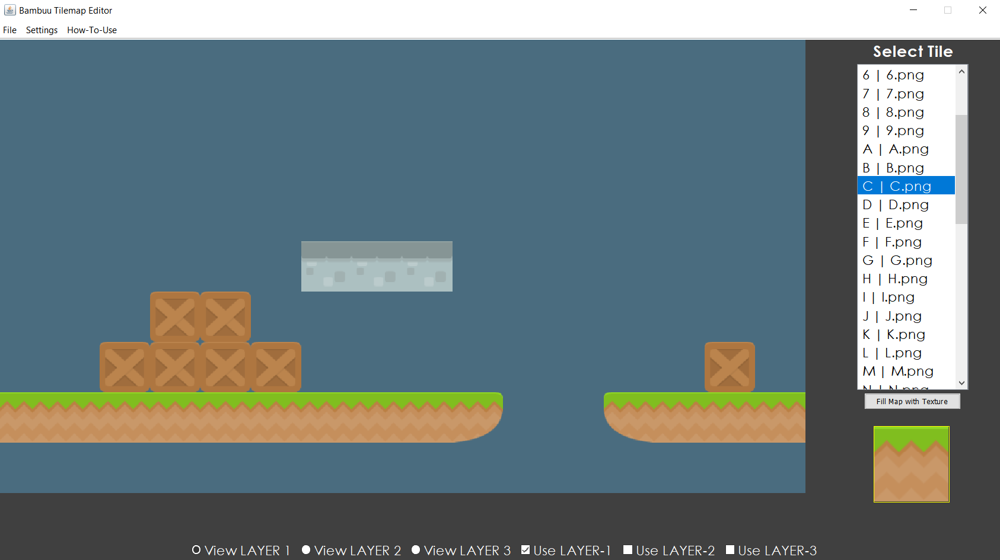
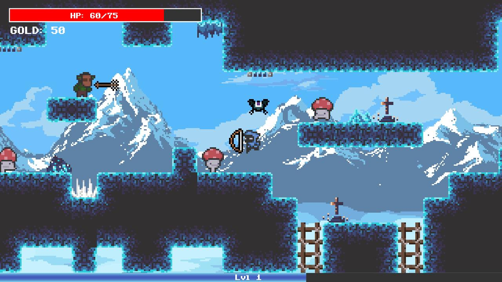
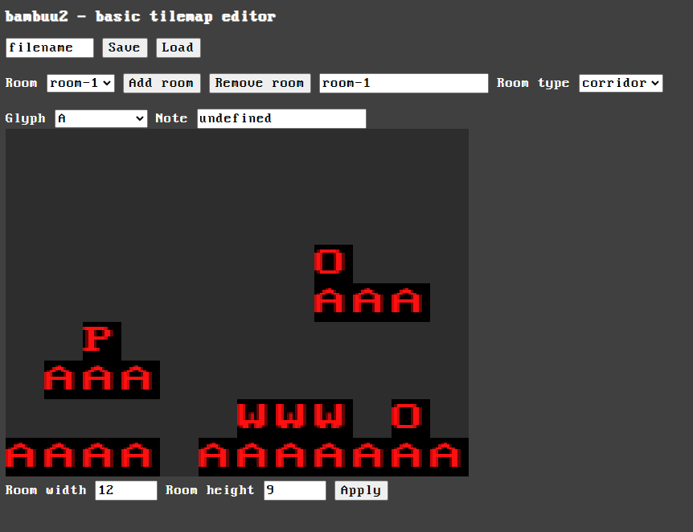

In 2019 I learned about how Wolfenstein 3D renders its top-down 2D shooter through raycasting to create depth and perspective and a first person point of view. I found it interesting and wanted to write my own program that did the same thing. I hadn't started writing C/C++ code by that time, so I wrote this program in Java.

I found a great explanation by Lode Vandevenne, and I had fun writing my own raycaster. It was a good coding exercise and it continued my journey into game development and engineering.
To create levels for this raycaster, I wrote a basic editor for 2D tile maps in Java using Swing (what a dogshit UI library my god). I ended up using this tile map editor for my other games like Dream of Flight.

In 2022, I lead a group of 6 students to create a game from scratch in C++. I had the most experience so I ended up doing the majority of the coding for the engine and the game. The game can be found on itch.io.

We were creating a 2D roguelike platformer, and I wrote the procedural level generation code similarly to how Spelunky does its level generation. For this I needed to handcraft rooms that were stitched together to create the illusion of randomness. So I wrote version 2 of the tile map editor.
I just wanted to pump out something usable quickly, so this time I wrote everything in HTML5 despite my dislike of web tech.

This was a simple side thing to be able to make levels for the main game. I put very little effort into it and whipped it up fairly quickly, but it's still miles better and way more powerful than my first tile map editor.